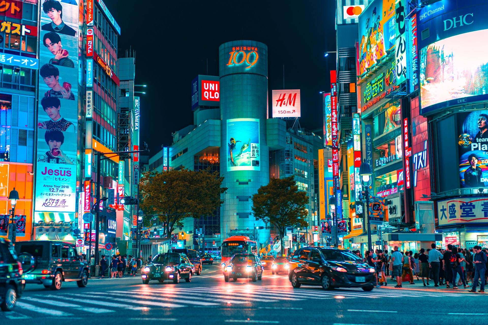

Tradition collides with pop culture in Tokyo, where you can reverently wander ancient temples before rocking out at a karaoke bar. Wake up before the sun to catch the lively fish auction at the Toyosu Market, then refresh with a walk beneath the cherry blossom trees that line the Sumida River. Spend some time in the beautiful East Gardens of the Imperial Palace, then brush up on your Japanese history at the Edo-Tokyo Museum.
Regardless of season, it's hard not to succumb to romance as you wander Kyoto's atmospheric streets, gaze at the glimmering Kinkaku-ji Pavilion, enjoy the traditional dances of the geisha or feast at restaurants over the Kamo River. Only Rome has more World Heritage Sites than the former Japanese capital. But happily unlike Rome, Kyoto maintains its calmness and romance even among throngs of summer tourists.
To most people, Hiroshima (広島) means just one thing. The city's name will forever evoke images of 6 August 1945, when Hiroshima became the target of the world's first atomic-bomb attack. Hiroshima's Peace Memorial Park is a constant reminder of that day, and it attracts visitors from all over the world with its moving message of peace. And the leafy city, with its wide boulevards and laid-back friendliness, is far from a depressing place. Present-day Hiroshima is home to an ever-thriving cosmopolitan community, and it's worth spending a couple of nights here to experience the city at its vibrant best.
If Kyoto was the city of the courtly nobility and Tokyo the city of the samurai, then Osaka (大阪) was the city of the merchant class. Osakans take pride in shedding the conservatism found elsewhere in Japan, and this spirited city – Japan's third-largest – is a place where people are a bit brasher and interactions are peppered with playful jabs.